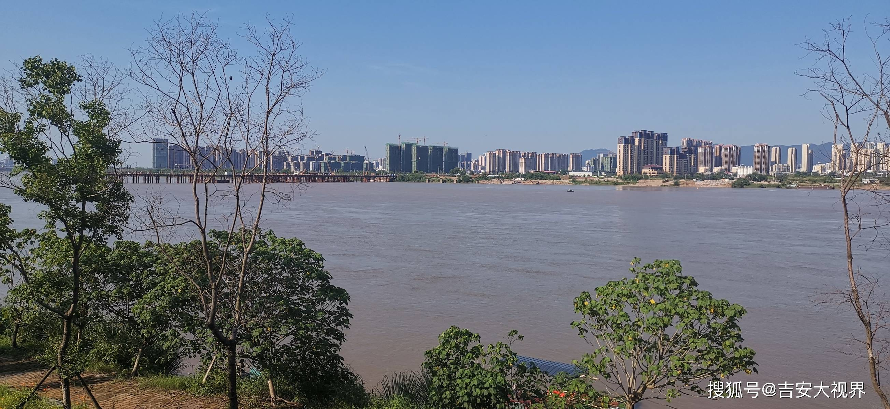
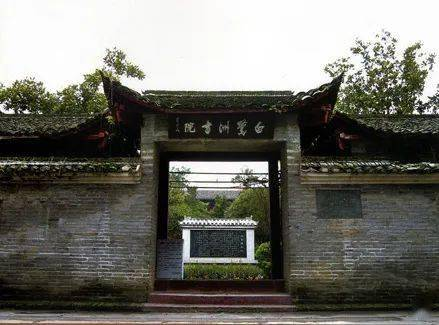
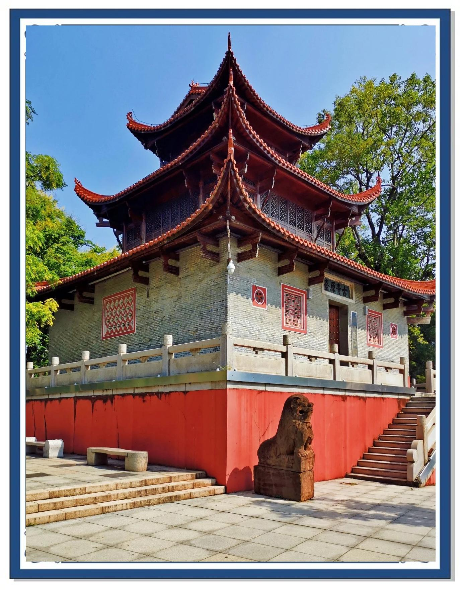

江西吉安JI'AN
江南望郡 · 文章节义之邦


白鹭洲书院
位于吉安市吉州区沿江路 248 号，南宋吉州知军江万里创建于南宋淳祐元年（1241 年）。宋代在白鹭洲上创建书院时，依洲名而称之为“白鹭洲书院”，为江西四大书院之一。现存古建筑除风月楼、云章阁外，尚有中山院、文山院、红楼，还有泮月池、复古亭等。书院在当时起了榜样领头作用，遍及吉州县城乡的千百书院相继建立繁荣起来。2013 年 3 月 5 日，白鹭洲书院被国务院公布为第七批全国重点文物保护单位。

江西吉安钟鼓楼
位于吉安市吉州区沿江路白鹭洲公园东南侧，濒临赣江，与白鹭洲隔水相望。建于北宋政和元年（1111 年），原名古青原台，民间习惯称其为“钟鼓楼”，是古城吉安的标志性建筑之一。清雍正元年（1723 年）增修为三层，雄伟壮观，如城阙状。现存建筑座西朝东，砖木结构，占地 404.8 平方米，通高 18.9 米，台基高 2.15 米。主楼三层，重檐翘角，四周设有外回廊，一楼门首嵌刘绎书“古青原台”石额，三楼悬钟遗迹尚存，属省级文物保护单位。